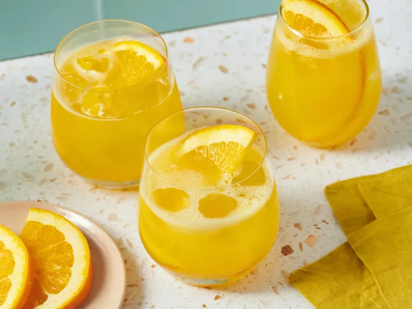

Home
Margarita

Description
A classic margarita is a refreshing cocktail made with tequila, lime juice, and orange liqueur. It's perfect for summer parties or a relaxing evening at home.
Ingredients
- 2 oz tequila
- 1 oz lime juice
- 1 oz orange liqueur (like Cointreau or Triple Sec)
- Salt for rimming the glass
- Lime wedge for garnish
Instructions
- Rub the rim of a glass with a lime wedge and dip it in salt to coat.
- In a shaker, combine tequila, lime juice, and orange liqueur with ice.
- Shake well and strain into the prepared glass filled with ice.
- Garnish with a lime wedge.
- Enjoy your refreshing margarita!